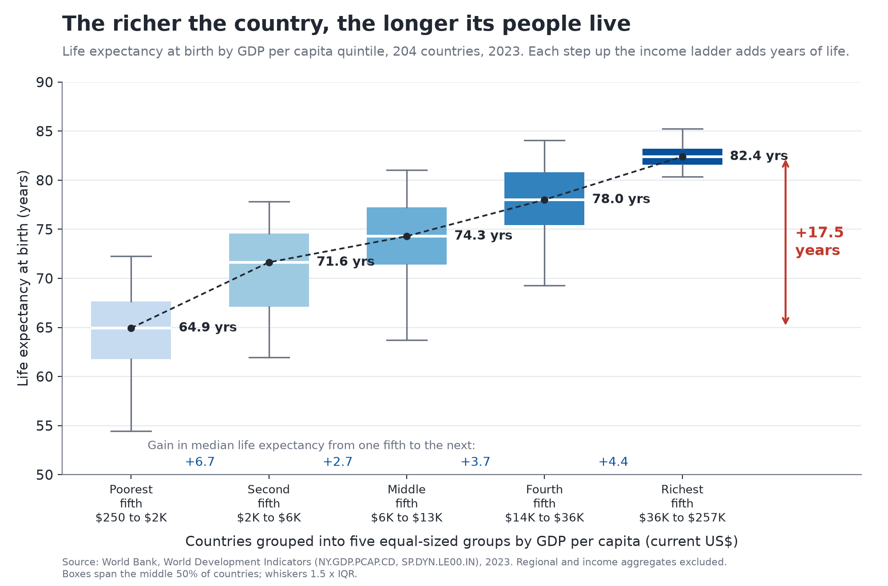

Proposition: National wealth is a reliable predictor of better health.
We measure national wealth as GDP per capita in current US dollars
(NY.GDP.PCAP.CD) and health as life expectancy at birth
(SP.DYN.LE00.IN), both from the
World Bank World Development Indicators
for 2023, the latest year with near complete coverage. Regional and income
aggregates are excluded so that every mark is a single country. The charts are
produced by make_charts.py from cached API responses.
FOR the Proposition

Design Decisions and Rationale:
- +0.5 Binning countries into equal-count GDP quintiles. Initially, our checkpoint paired a log-scale scatter plot with this box plot, but with more than 200 countries the scatter plot suffered from severe overplotting. Grouping countries into five bins of about 41 countries each removes the overplotting entirely and turns a noisy cloud into a clean, monotonic staircase that is easy to read at a glance. The transformation is honest about the spread within each group, which is why we score it as earnest; however, it is worth mentioning that quintiles weight every country equally regardless of population, and the richest fifth spans $36K to $257K, so the flattening of the curve among wealthy countries is compressed into a single box where the reader cannot see it.
- −1.5 Hiding outliers. We drew the whiskers at 1.5 times the interquartile range and suppressed the individual outlier points. We would justify this as a way of keeping the chart uncluttered, and the footnote states only the whisker rule. In practice, the hidden points are almost entirely rich countries with comparatively short lives: the United States, Saudi Arabia, Greenland, the Bahamas, Sint Maarten, Monaco and San Marino in the richest fifth, and Nauru in the fourth. Removing them makes the richest box look uniformly healthy, and the footnote describes the whisker rule without stating that points beyond it were dropped, so we consider this our most deceptive choice for this chart.
- +0.5 Connecting the medians and labelling every step. A dashed line links the five medians, each median is printed in years, the gain between adjacent quintiles is written along the bottom (+6.7, +2.7, +3.7, +4.4), and a red bracket summarises the total gap of 17.5 years. These numbers are exact and allow a reader to verify our claim, which is earnest. Whilst a line between categorical groups is a mild departure from convention, it encourages the reader to see a single path that countries climb as they grow richer, which is a stronger story than the data alone supports.
- −0.5 Starting the y-axis at 50 years. Life expectancy has no meaningful zero, so a truncated axis is common practice and the axis is clearly labelled with gridlines every five years. Nevertheless, a floor of 50 places the lowest whisker just above the bottom and the richest box near the top, which makes the climb across quintiles fill the entire plot and appear as steep as possible. A lower floor, such as 40, would make the same differences look more modest.
- −0.5 Title and subtitle framing. The title, “The richer the country, the longer its people live”, is a fair description of the association. The subtitle, however, states that “each step up the income ladder adds years of life”, which uses causal language (“adds”) for what is a cross-sectional comparison of different countries in one year. We kept the source, the year, the country count and the definition of the boxes on the chart so that the framing is balanced by transparent context.
AGAINST the Proposition

Design Decisions and Rationale:
- −1.5 Restricting the chart to countries above $30,000. Initially, our preferred AGAINST chart compared the change in life expectancy with the change in income, but its fitted slope was still positive, so it supported the proposition rather than opposing it. The final chart therefore builds on the “rich club” scatter plot from our checkpoint and shows only the range in which the relationship flattens. Across all 204 countries, the correlation between log GDP per capita and life expectancy is 0.86, and this chart never shows it. The title speaks only of “wealthy nations” and the $30,000 threshold appears in the subtitle, so readers are likely to generalise “money buys almost no more life” to the proposition as a whole, which is the purpose of the choice.
- −1.5 Excluding countries with fewer than one million people. We would justify this filter on the grounds that life expectancy estimates for very small populations are unstable, and the rule is disclosed in the subtitle. It is worth mentioning, however, that it removes twenty territories and microstates, including Monaco, Liechtenstein, Luxembourg and Bermuda, which are the richest and among the longest-lived places in the dataset. With them included, the slope is +0.25 years per $10,000 and r = 0.36; with them removed, the slope falls to +0.11 and r to 0.15. This follows the feedback we received to remove countries so that the fit reflects the stance, and because the rule sounds methodological, few readers are likely to question it.
- −1 Axis ranges that flatten the trend. The y-axis spans twenty years (70 to 90) whilst the countries shown only span about seven (78.4 to 85.2), so the points sit in a narrow band and the trend line looks almost horizontal. The x-axis is linear rather than logarithmic, which stretches the wealthiest countries far to the right and makes the distance travelled in income look enormous relative to the gain in years. Both axes are labelled and gridded, so the deception is only detectable on close study.
- +1 Median bars for each quarter of the countries, with a stated fit. We split the 32 countries into four equal-sized groups of eight by GDP per capita and drew a solid bar at the median life expectancy of each group, spanning that group’s income range. The medians are 82.6, 82.3, 81.8 and 82.9 years, so the bars form a visibly flat staircase even though income more than triples from the first group to the last. This mirrors the quintile binning of the FOR chart, which makes the two arguments directly comparable, and it is robust to individual outliers such as the United States. A dashed least-squares line with its slope and correlation is retained so that a reader can check the claim against the marks; we describe the slope per $10,000, which makes the effect sound small, but across the full range of the chart it amounts to roughly 0.9 years, which is still modest. In response to the overplotting feedback, the chart uses one point per country for a single year, so all 32 points are visible and none overlap.
- −0.5 Selective labels and the United States annotation. We labelled only a handful of countries chosen to support the stance: Japan, Spain and Hong Kong (long lives at moderate income) and the United States (very rich but comparatively short-lived), plus a few anchors such as Switzerland, Norway and Ireland. The annotation that the US is 2.3 times as rich as Japan yet can expect 5.7 fewer years of life is accurate, but it is a single comparison selected because it is striking, and the US gap is widely attributed to factors other than income.
Final Reflection
The FOR side was the more straightforward of the two, because the data genuinely support it: across all countries, life expectancy rises steadily with GDP per capita, and the box plot only needed to present that relationship cleanly. The AGAINST side was considerably more difficult. Our checkpoint chart on growth and longevity still showed a positive slope, and the feedback we received made it clear that a persuasive AGAINST visualization could not simply add caveats to a rising trend; it had to show a trend that does not rise. Achieving that required us to choose a subset of the data, a population filter and axis ranges that together flatten the line, and then to summarise the remaining countries with median bars that make the plateau visible at a glance. It is worth mentioning that the same requirement to remove overplotting improved both charts: summarising into quintiles on one side and showing one point per country for a single year on the other made each message far easier to read.
What surprised us most was how few of our choices involved altering or fabricating data. Every number on both charts is correct, every filter apart from the hidden outliers is disclosed in a subtitle or footnote, and both charts cite the same World Bank source. Nevertheless, the two charts lead a reader to opposite conclusions. The most powerful levers were decisions that look like routine cleaning: hiding outliers to reduce clutter, and dropping small countries for statistical stability. In both cases, the countries removed were precisely the ones that contradicted the chart’s message. We also found that a single sentence of framing, such as the causal verb “adds” in the FOR subtitle, changes what a reader takes away from a chart whose marks remain unchanged.
We now define ethical analysis and visualization as work in which the reader could reach the same conclusion if they had access to the full data and the reasons behind every transformation. Under that definition, the bound between acceptable persuasion and misleading design lies less in any particular technique and more in whether the choice changes the answer. Emphasis, clear titles, annotations and a sensible axis range are acceptable when the omitted data would not overturn the message. A choice becomes misleading when it is selected because of its effect on the conclusion, and when its consequences are hidden even though the rule itself is disclosed, as with our population filter, which halves the slope while sounding purely methodological. We therefore believe that disclosure alone is not sufficient: an ethical chart should also make clear what the excluded data would have shown.